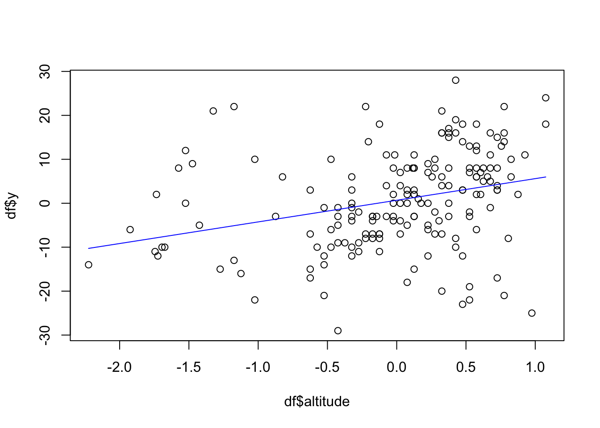

Spatial modeling without spatial field (Calcium data)
Haakon Bakka
BTopic130 updated 09 Sept. 2018
1 About
I am not sure if this topic should be included.
This topic is a simple example of a spatial model for a real dataset. This example uses the same data as BTopic108, and explores spatial models without a spatial effect. (If that sentence sounds strange, don’t blame me.)
1.1 Initialisation and dependency
We load the libraries and functions we need. You may need to install these libraries (Installation and general troubleshooting).
library(INLA); library(sp); library(fields)
library(geoR)
library(viridisLite)
# - for better colours
rm(list=ls())
options(width=70, digits=2)1.2 Data
data('ca20')
class(ca20)## [1] "geodata"summary(ca20)## Number of data points: 178
##
## Coordinates summary
## east north
## min 4957 4829
## max 5961 5720
##
## Distance summary
## min max
## 43 1138
##
## Borders summary
## east north
## min 4920 4800
## max 5990 5800
##
## Data summary
## Min. 1st Qu. Median Mean 3rd Qu. Max.
## 21 43 50 51 58 78
##
## Covariates summary
## altitude area
## Min. :3.3 1: 13
## 1st Qu.:5.2 2: 49
## Median :5.7 3:116
## Mean :5.5
## 3rd Qu.:6.0
## Max. :6.6
##
## Other elements in the geodata object
## [1] "reg1" "reg2" "reg3"1.3 Data citations
For a description of the data see ?ca20 and references therein.
2 Data
2.1 Re-scaling and re-naming (as in 108)
First we scale and re-name the data, so that we are consistent with the conventions used in the other topics.
df = data.frame(y = ca20$data, locx = ca20[[1]][ , 1], locy = ca20[[1]][ , 2], ca20[[3]])
spatial.scaling = 100
df$locx = (df$locx - min(df$locx))/spatial.scaling
df$locy = (df$locy - min(df$locy))/spatial.scaling
df$altitude = df$altitude - mean(df$altitude)
df$y = df$y-50We add the two simple areas
df$area1 = (df$area==1)*1
df$area2 = (df$area==2)*12.2 Exploring the data
First we do simple summary and compute the correlations.
summary(df)## y locx locy altitude area
## Min. :-29.0 Min. : 0.0 Min. :0.0 Min. :-2.22 1: 13
## 1st Qu.: -7.0 1st Qu.: 3.3 1st Qu.:2.4 1st Qu.:-0.32 2: 49
## Median : 0.5 Median : 5.4 Median :3.7 Median : 0.13 3:116
## Mean : 0.7 Mean : 5.3 Mean :4.0 Mean : 0.00
## 3rd Qu.: 8.0 3rd Qu.: 7.4 3rd Qu.:5.3 3rd Qu.: 0.48
## Max. : 28.0 Max. :10.0 Max. :8.9 Max. : 1.08
## area1 area2
## Min. :0.00 Min. :0.00
## 1st Qu.:0.00 1st Qu.:0.00
## Median :0.00 Median :0.00
## Mean :0.07 Mean :0.28
## 3rd Qu.:0.00 3rd Qu.:1.00
## Max. :1.00 Max. :1.00head(df)## y locx locy altitude area area1 area2
## 1 2 7.5 0.00 0.58 3 0 0
## 2 7 7.7 0.46 0.53 3 0 0
## 3 22 7.9 0.93 0.78 3 0 0
## 4 24 8.1 1.40 1.08 3 0 0
## 5 18 8.2 1.86 1.08 3 0 0
## 6 -5 8.4 2.33 0.23 3 0 0cor(cbind(df[, 1:4], as.numeric(df[ , 5])))## y locx locy altitude as.numeric(df[, 5])
## y 1.000 -0.049 -0.52 0.30 0.49
## locx -0.049 1.000 0.25 -0.42 -0.28
## locy -0.520 0.249 1.00 -0.75 -0.83
## altitude 0.297 -0.418 -0.75 1.00 0.63
## as.numeric(df[, 5]) 0.485 -0.280 -0.83 0.63 1.00Next we plot the relationship between altitude and the response.
plot(df$altitude, df$y)
abline(lm(df$y~df$altitude), col="red")
3 Linear models
We define several predictors
formula = list()
formula[[1]] = y ~ altitude
formula[[2]] = y ~ f(altitude, model="rw1", scale.model = T, hyper = list(prec = list(prior="pc.prec", param=c(1,0.01))))Next we define the observation likelihood (also known as Stage 1). You will often see this in the INLA call, but, for increased clarity/readability, I prefer to do it separately.
prior.median.gaus.sd = 1
# - Think about this value
# - Remember sd(df$y)
family = 'gaussian'
control.family = list(hyper = list(prec = list(
prior = "pc.prec", fixed = FALSE, param = c(prior.median.gaus.sd,0.5))))In total, this says that the observation likelihood is Gaussian, with a parameter \(\sigma\), and that the prior is exponential \[\pi(\sigma) = \lambda e^{-\lambda x}, \] where \(\lambda\) is determined by setting the median \(\log(2)/\lambda\) at prior.median.gaus.sd.
4 Running INLA
res = list()
for (i in 1:2){
res[[i]] <- inla(formula[[i]], data=df,
family = family,
control.family = control.family,
control.predictor = list(compute=T),
control.inla = list(int.strategy='eb'),
control.fixed = list(expand.factor.strategy='inla'))
}To see detailed output while the inla call is running, please set verbose=TRUE. The control.xxx comments illustrate a few optional statements to the inla call. There are many other options available.
4.1 First results
summary(res[[1]])##
## Call:
## c("inla(formula = formula[[i]], family = family, data = df,
## control.predictor = list(compute = T), ", " control.family =
## control.family, control.inla = list(int.strategy = \"eb\"), ",
## " control.fixed = list(expand.factor.strategy = \"inla\"))" )
## Time used:
## Pre = 2.42, Running = 0.16, Post = 0.165, Total = 2.75
## Fixed effects:
## mean sd 0.025quant 0.5quant 0.97quant mode kld
## (Intercept) 0.68 0.78 -0.85 0.68 2.2 0.68 0
## altitude 4.92 1.17 2.62 4.92 7.1 4.92 0
##
## Model hyperparameters:
## mean sd 0.025quant
## Precision for the Gaussian observations 0.009 0.001 0.007
## 0.5quant 0.97quant mode
## Precision for the Gaussian observations 0.009 0.011 0.009
##
## Expected number of effective parameters(stdev): 2.00(0.00)
## Number of equivalent replicates : 89.06
##
## Marginal log-Likelihood: -681.93
## Posterior marginals for the linear predictor and
## the fitted values are computed4.2 Comparing fixed effects
res[[1]]$summary.fixed[, 1:5]## mean sd 0.025quant 0.5quant 0.97quant
## (Intercept) 0.68 0.78 -0.85 0.68 2.2
## altitude 4.92 1.17 2.62 4.92 7.1res[[2]]$summary.fixed[, 1:5]## mean sd 0.025quant 0.5quant 0.97quant
## (Intercept) 0.17 0.82 -1.4 0.17 1.74.3 Random effect
plot(df$altitude, df$y)
effect = df$altitude*res[[1]]$summary.fixed$mean[2]
lines(df$altitude, effect, col="blue")plot(df$altitude, df$y)
lines(sort(unique(df$altitude)), res[[2]]$summary.random$altitude$mean, col="blue")
lines(sort(unique(df$altitude)), res[[2]]$summary.random$altitude$`0.025quant`, col="blue")
lines(sort(unique(df$altitude)), res[[2]]$summary.random$altitude$`0.97quant`, col="blue")4.4 Plotting predictors
Now we include intercept and any other terms.
plot(df$altitude, df$y)
effect = res[[1]]$summary.linear.predictor$mean
lines(df$altitude, effect, col="blue")
plot(df$altitude, df$y)
points(df$altitude, res[[2]]$summary.linear.predictor$mean, col="blue")
points(df$altitude, res[[2]]$summary.linear.predictor$`0.025quant`, col="blue")
points(df$altitude, res[[2]]$summary.linear.predictor$`0.97quant`, col="blue")
5 Comments
5.1 References